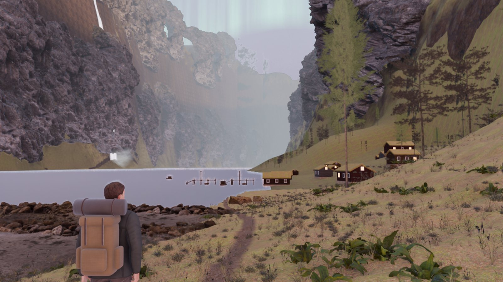
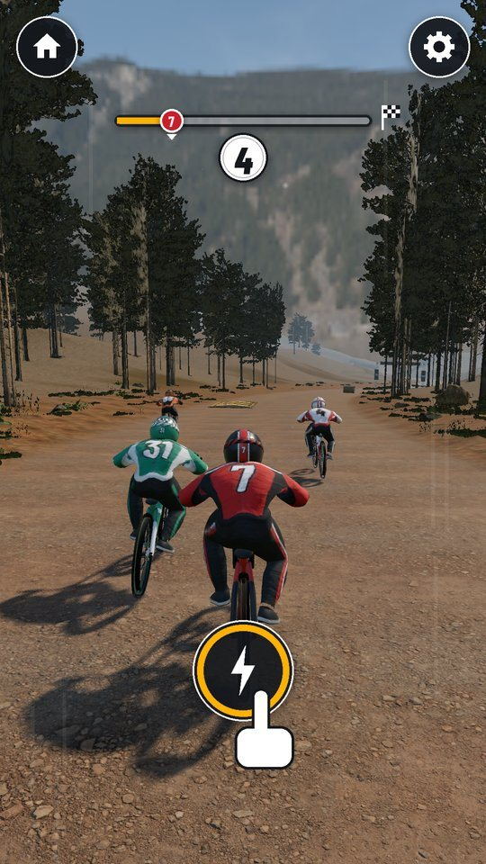
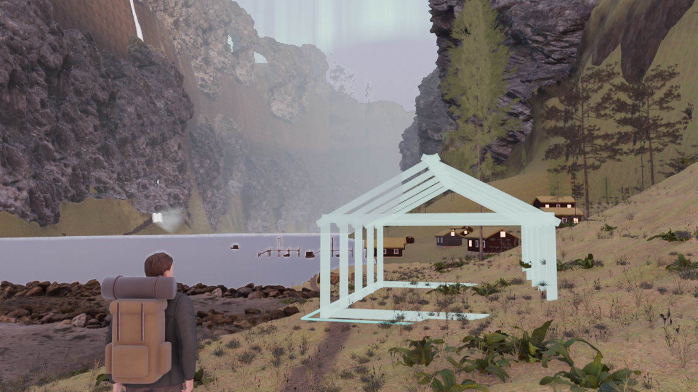
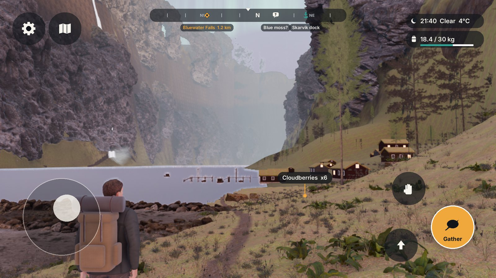
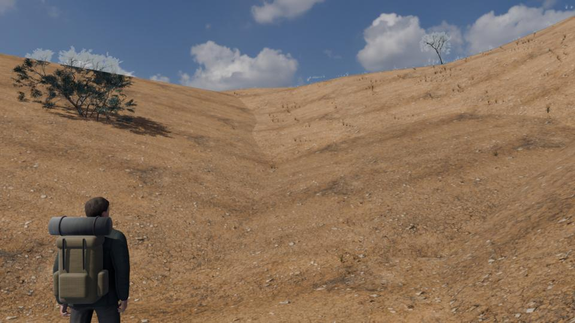
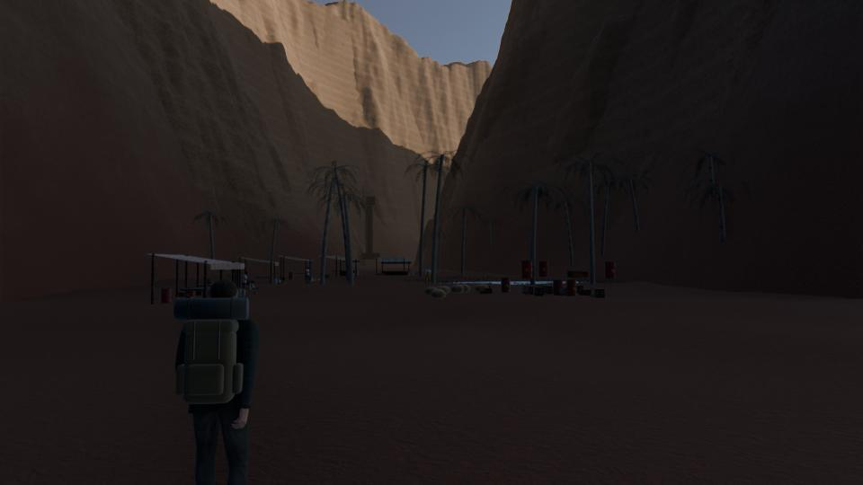
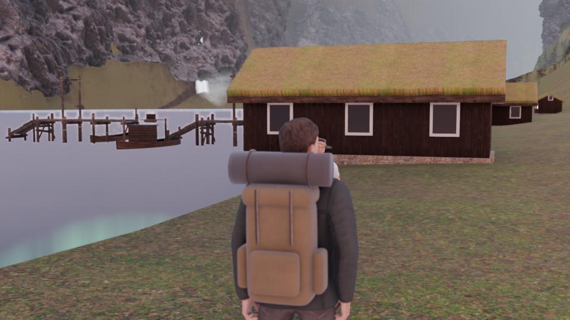

An open-world Android game with no fighting. You walk, climb, swim and sail across five regions, gather and trade what each place has, build homes and docks that make villages grow, and follow rumors from the people you meet to wonders no map shows.
Working title · landscape 1920×1080 · third person · offline · voiced English NPCs · youth and adults

Race Riders reaches its look with tuned light, real ground textures and sharp riders. This first fjord frame has the right layout but softer, flatter surfaces. The fix list is concrete: triplanar rock on cliffs, a water shader with reflections and depth colour, less fog, warmer low sun. Nothing here suggests the engine or phone cannot reach the Race Riders level; the art pass is not finished.


Each region is a dense, hand-built area of about 2×2 km. Every region lacks something it needs daily, so trade between them is the spine of the economy. The player starts in the fjord; ships, caravans, barges and a mountain pass open the others.
Granite walls, waterfalls, turf-roof timber houses, northern lights. Timber, fish, wool, bog iron. Wonders: the Singing Cavern behind Bluewater Falls, the Whale Graveyard.
White limestone, olive terraces, marble ruins of an older age, turquoise shallows. Olives, salt, marble. Wonders: the Forgotten Observatory, the Sunken Colonnade, the Sky Bridge.
Red slot canyons, cliff dwellings, palm oasis, the biggest market. Glass, copper, dates, spices. Wonders: the Glass Forest, Echo Canyon, meteor showers over the Star Well.
Mangroves, stilt villages, mist, glowing fungi at night. Hardwood, cacao, pearls, herbs. Wonders: the Floating Isles, the Glowworm Grotto, the Thousand-Root Tree.
Blue glacier tongues, ice caves, hot springs steaming in snow. Felt, rock crystal, barley. Wonders: the Ice Cathedral, the Hot Spring Terraces, the Frozen Falls.
Rows export to columns, once that route is open.
| From \ To | Fjord | Isles | Oasis | Delta | Highlands |
|---|---|---|---|---|---|
| Fjord | · | Timber, tar, stockfish, wool | Stockfish, iron | Iron tools, tar | Timber, stockfish, iron |
| Isles | Olive oil, salt, wine, marble | · | Oil, wine, shell dye | Salt, wine | Oil, dried figs |
| Oasis | Glass, spices, copper | Glass, copper, dates | · | Glass, indigo, copper | Glass, spices, dates |
| Delta | Cacao, hardwood, herbs | Hardwood, pearls | Cacao, pearls, herbs | · | Herbs, cacao |
| Highlands | Felt, crystal | Crystal, spring salts | Felt, crystal | Felt, barley | · |
One in-game day lasts 24 real minutes, which is one phone session. A typical day in the fjord: the river runs brown after rain, so fresh fish is scarce and dear at 8.7 coins. You sell the 12 smoked fish you put by for 104 coins, buy nails, raise the walls of a new house, and hear at supper that the falls sing at first light. Over a week the house fills with a fishing family, the hamlet becomes a village, a trader's boat starts calling, and the rumor leads to the Singing Cavern.
Cold, hunger, rest, darkness, steep terrain, carrying weight and weather push back. Nothing kills you: running out of warmth puts you back in the nearest bed at 6 in the morning. Three presets set how much that costs.
| Preset | Meters drain | Cost of a setback | For |
|---|---|---|---|
| Gentle | ×0.5 | Nothing lost, climbing never tires | Younger players, first launch |
| Wayfarer | ×1.0 | Fresh food spoils, half a day passes | Most players |
| Hardy | ×1.5 | 10% of carried goods left where you fell, marked to recover | Adults who want tension |
Rain for 3 days → river rises 1.2 m → boats stay in → fish stock 85 → 58 → 32 → 6 → fish price 4.8 → 6.0 → 8.7 → 15.0 coins → smoked fish sells fast → Ingrid the fisher remembers who built the smokehouse
Prices follow base × clamp((target ÷ stock)^0.6, 0.4, 3.0). The flood numbers come from the designer's price script (their calc).
Every NPC has needs, a daily schedule, a personality, relationships and a short list of memories of what you did (helped, traded fairly, stayed away, built something for them). Far away, people run on a cheap daily tick; up close they walk, work and talk in full.
All dialogue is written before release and voiced on the build machine, so the game runs fully offline with no AI service behind it. At runtime the game picks the line that fits the moment: who you are to this person, what they remember, today's weather and prices, the rumors they hold.
World facts → line templates with fixed slots → written variants (2–4 per case) → voiced per NPC voice on the build machine → cached audio → picked by rules at runtime
| Voice budget | Clips | Size |
|---|---|---|
| First test valley: 20 NPCs × 148 lines | 2,960 | about 28 MB |
| Full game: 5 regions × 60 NPCs × 180 lines | 54,000 | 0.5 to 0.7 GB, as region downloads |
Voice licences are the open risk. The common free Piper English voices (lessac, ryan) forbid commercial use; ljspeech is public domain but is one voice. Picking the voice source is a decision below.




Still to draw: the market and trade screen, the wonder discovery card and the conversation subtitle bar.
Build one 1 km valley with 20 walking NPCs and measure it on your phone. At 30 fps or better, stay with the pipeline that made Race Riders. Below that, switch to Unity before any real content exists. Unity's asset store is the real argument for it; its cost is a new toolchain, a licence in CI, and scene files Claude edits less reliably.
| Question | Godot | Unity |
|---|---|---|
| Current version | 4.7.2 (Aug 2026). Studio runs 4.6.2 verified | 6.3 LTS, 6000.3.25f1 (Sep 2026) verified |
| Big terrain | Terrain3D add-on; Android "still a bit experimental" per its docs verified | Built-in Terrain not checked |
| Runs on this Linux laptop | Yes, in use today | Ubuntu 22.04 / 24.04 supported verified |
| APK builds in GitHub | Studio workflow already builds Race Riders and the other studio games | GameCI; needs licence file + Unity login as secrets verified |
| Cost | Free, MIT | Free under $200K revenue a year; splash screen optional verified |
| Claude drives the editor | Scenes are text files Claude edits directly | Community bridge unity-mcp, 14.7k stars, active verified |
| NPC brains | LimboAI behaviour trees, built for 4.7.2 verified | Unity Behavior + AI Navigation not checked |
| Characters and animation | Mixamo is royalty-free for commercial games in both (no reselling raw files, no ML training) verified | |
Each row was checked against vendor pages on 7 Oct 2026. Rows marked "not checked" ran out of time and are unconfirmed.
| Step | Content | What it proves |
|---|---|---|
| Engine test 2 weeks | 1 km valley, 20 walking NPCs, your phone | The engine holds 30 fps with the realistic look |
| Slice 01 | Skarvik valley: 1 hamlet, 20 NPCs, 10 resources, 5 buildings, 1 market, trader boat, weather, day and night, the Singing Cavern | Walking feels good, the world's chains are readable, voiced lines feel alive |
| Slice 02 | Amberline Isles town, 30 NPCs, boat building, first sea crossing | Two economies with different shortages make trade worth doing |
| Beta | All 5 regions, 30 wonders, 8 sky events, 4 trade routes | The week loop holds for 20+ hours and fits on a phone |
Full design doc: projects/mwm-wayfarer/docs/GDD.md (552 lines). Visual spec: docs/DESIGN.md.